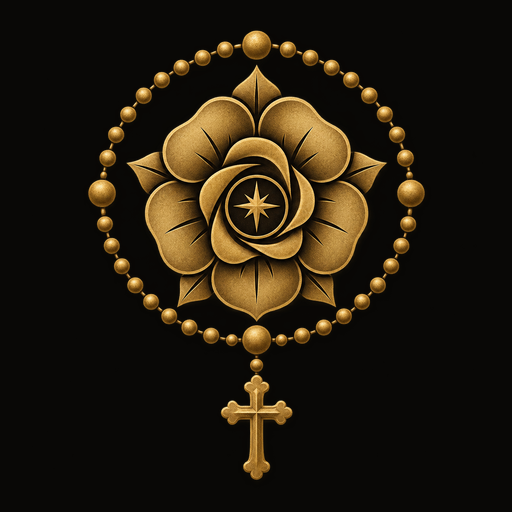

Ad Iesum per Mariam
Rosarium
Sacratissimum Rosarium Beatæ Mariæ Virginis

Ad Iesum per Mariam
Sacratissimum Rosarium Beatæ Mariæ Virginis
Oração em andamento
Santo Terço
Ao final, o Rosarium conduz à Salve-Rainha, à Ladainha Lauretana e à oração conclusiva.
Orações
Thesaurus Precum
Consulte cada oração separadamente. O idioma principal aparece primeiro e a tradução permanece logo abaixo.
Rosarium
A tradução será exibida no outro idioma.
Oração em andamento
Confirmação
Ad Iesum per Mariam
Um instrumento de oração católica tradicional, concebido para conduzir com clareza pelo Santo Terço e pelo Santo Rosário completo.
Criado por Arthur Medeiros
Salve Maria e Viva Cristo Rei!